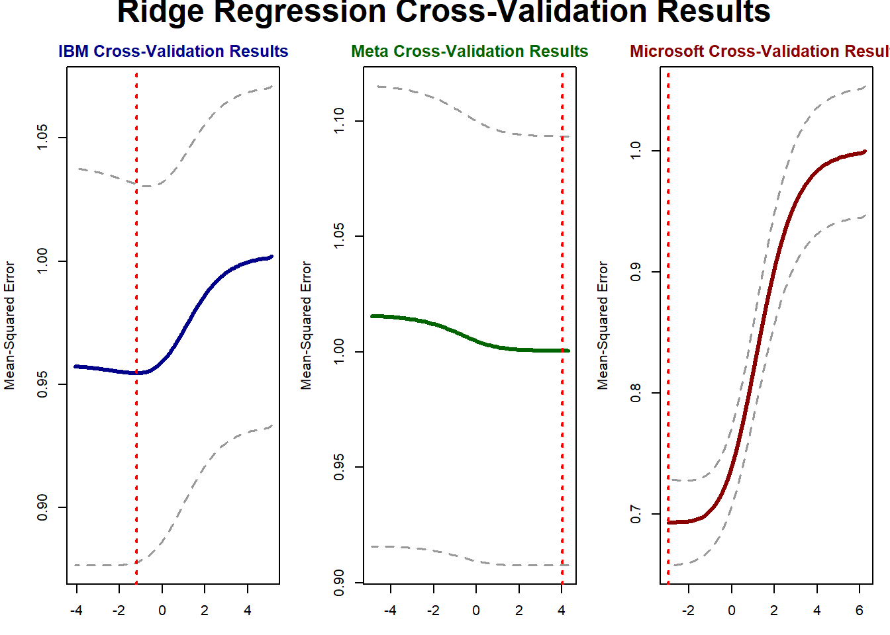

1 Introduction
1.1 Context and Background
Resume screeners were developed in order to screen canidates more efficiently and reduce the human bias in the screening process. However, there are concerns with whether or not these automated resume screening systems are truly unbiased in their decision making process. As more and more companies use some form of AI automation in their hiring process, the question of whether or not these systems are unbiased has become more important.
According to Naveen Kumar in his article on AI recruitment statistics, roughly 87% of companies are using AI in the hiring and recruitment process1. As such, the University of Washington decided to conduct their own study to determine if there is any bias in the decision making process of resume screeners and what sorts of factors contribute to the scoring process of a resume. Their research found “significant racial, gender and intersectional bias in how three state-of-the-art large language models, or LLMs, ranked resumes. The researchers varied names associated with white and Black men and women across over 550 real-world resumes and found the LLMs favored white-associated names 85% of the time, female-associated names only 11% of the time, and never favored Black male-associated names over white male-associated names”2. Their research came to these conclusions by handing the AI a list of identical resumes with different names and then having the AI give them scores. The article ends with the research team noting that more research should be done in this area by looking at different attributes and more LLMs in order to better allign these AI systems with the real world policies to reduce bias and harm.
1.2 Project Purpose
This project aims to determine if there is any bias in the decision making process of resume screeners and what sorts of factors contribute to the scoring process of a resume. More specifically, looking at a wide variety of applicant attributes to determine what factors have the highest contribution to the bias in the decision making process. Ideally, professional experience and education will be the best predictors of the resume scores but we will also look into other factors such as gender, ethnicity, and institutional prestige.
2 Methods
2.1 Data Collection and Purpose
The original list of resumes is from a dataset in huggingface3, which is comprised of both real and synthetic resume data in JSON formatting. The purpose of this dataset was for training natural language processing (NLP) models for resume parsing. Specifically, the resumes are oriented around technical roles and is designed for NLP models to be trained on and used for candidate matching / screening in this field. This dataset was posted on huggingface Feburary 21st, 2025 and has not been updated since (excluding the minor changes to the readme).
The sources used for this dataset are sourced from anonymized CV submissions as well as synthetiic resumes generated using “Faker Library” and filled with realistic and role appropriate information. All resumes are anonymized by removing PII (Personally Identifiable Information) but many fields (such as names) contain realistic placeholders. The makers of the dataset note that the data is oriented around technical roles and the synthetic resumes may not capture the same nuances of a real resume. As such, the makers note that this dataset should only be used for NLP, data augmentation, or exploratory data analysis and should not be used for non-technical roles or personalized hiring decisions.
The dataset contains over 4500 resumes in a JSON format. Each resume entry contains personal information, work experience, education information, skills and projects. Since these are technical resumes (oriented around the computer science / information technology field), the skills and projects fields contained a candidate’s coding projects and/or coding languages. For the scope of this project, all fields were used for analysis or scoring of the resume.
2.2 Data Processing
The collection of resumes was processed in order to create the score datasets used for this project. The score datasets has the following columns: Name (acting as the primary key), Resume Score, Gender, Ethnicity, Institutional Prestige, Years of Experience, Skill Relevance, Experience Relevance and Project Relevance. The score datasets are specific to each of the langauge models used in this project. This is because we are trying to understand the relation between how the model scores a reseume and the model’s own perception of the candidate (gender, ethnicity, and institutional prestige).
For creating the score datasets themselves, the resumes were scored by the model and then the model was asked to guess the gender, ethnicity, and institutional prestige of the candidate. For determining the skill/project/expperience relevance, that was also a call to the language model. It is important to note that each column of data is a separate instance of the language model to reduce the liklihood of previous responses affecting the current responses. All of this information was then used to create the score dataset for each of the models used in this project.
The models used for this project include IBM’s granite3.3:8b, Microsoft’s Phi4:14b and Meta’s llama3.1:8b. These models were choosen because they are highly rated models despite the lower paramter size and are all open source.
2.3 Statistical Tools and Approach
After the resumes have been processed by the language models, there was some data cleaning to ensure the models followed the instructions. The initial approach was to use linear regression to predict the resume score from all of the other variables in the dataset. The formula used for this model was: score ~ gender + ethnicity + prestige + skill_score + project_score + experience_score + years_experience. Here, the response variable is the resume score which are integers in the range 0-100. The categorical variables are: gender, ethnicity, and prestige. The numeric variables are: years of experience, skill score, project score, and experience score. All categorical variables were setup such that “Unknown” was the reference category. The numeric variables, like the resume score, are in range 0-100, with the exception of years experience which is a positive decimal.
Next there was analysis of interation effects and determining if any interactions were considered statistically significant. If the interaction was considered significant, then the interaction was added to the model. Additionally, the model diagnostics were conducted to ensure that the model’s assumptions were met. Specifically, the model was checked for normality in the residuals and multicollinearity by using the Shapiro-Wilk test and variance inflation factor, respectively. Interaction effects were added to the model if they were statistically significant. Due to multicolinearity issues, the model used a ridge regression.
3 Results and Discussion
Initial Modeling
| Predictor | Meta \(\beta\) (SE) | p-value | Microsoft \(\beta\) (SE) | p-value | IBM \(\beta\) (SE) | p-value |
|---|---|---|---|---|---|---|
| Intercept | \(93.81\) (\(4.934\)) | \(<2\times10^{-16}\) | \(32.87\) (\(4.896\)) | \(3.07\times10^{-11}\) | \(77.70\) (\(6.487\)) | \(<2\times10^{-16}\) |
| Gender | ||||||
| Female | \(-6.319\) (\(4.681\)) | \(0.177\) | \(-2.409\) (\(2.718\)) | \(0.376\) | \(-2.253\) (\(2.923\)) | \(0.441\) |
| Male | \(-6.077\) (\(4.681\)) | \(0.194\) | \(-2.078\) (\(2.725\)) | \(0.446\) | \(-6.902\) (\(2.910\)) | \(0.018\) |
| Ethnicity | ||||||
| African American | \(-0.9453\) (\(1.022\)) | \(0.355\) | \(-0.1997\) (\(3.154\)) | \(0.950\) | \(8.545\) (\(5.715\)) | \(0.135\) |
| Asian | \(-0.3434\) (\(1.252\)) | \(0.784\) | \(2.761\) (\(3.536\)) | \(0.435\) | \(6.521\) (\(6.675\)) | \(0.329\) |
| Caucasian | \(-0.8673\) (\(0.960\)) | \(0.367\) | \(-0.0981\) (\(3.058\)) | \(0.974\) | \(11.31\) (\(5.456\)) | \(0.039\) |
| Hispanic | \(0.3980\) (\(0.997\)) | \(0.690\) | \(-0.7414\) (\(3.103\)) | \(0.811\) | \(10.61\) (\(5.618\)) | \(0.059\) |
| Prestige | ||||||
| High | \(-0.4145\) (\(0.650\)) | \(0.524\) | \(1.214\) (\(3.122\)) | \(0.697\) | \(-3.686\) (\(2.145\)) | \(0.086\) |
| Medium | \(0.1902\) (\(0.541\)) | \(0.725\) | \(-0.1486\) (\(2.023\)) | \(0.941\) | \(0.6868\) (\(1.786\)) | \(0.701\) |
| Low | \(-0.0209\) (\(0.516\)) | \(0.968\) | \(3.422\) (\(3.481\)) | \(0.326\) | \(-3.462\) (\(1.698\)) | \(0.042\) |
| Scores | ||||||
| Skills | \(0.0007\) (\(0.009\)) | \(0.933\) | \(0.1147\) (\(0.045\)) | \(0.011\) | \(-0.1036\) (\(0.046\)) | \(0.024\) |
| Projects | \(0.0081\) (\(0.009\)) | \(0.345\) | \(0.1480\) (\(0.021\)) | \(6.75\times10^{-12}\) | \(-0.0763\) (\(0.040\)) | \(0.058\) |
| Experience | \(-0.0009\) (\(0.011\)) | \(0.932\) | \(0.3693\) (\(0.028\)) | \(<2\times10^{-16}\) | \(-0.0804\) (\(0.037\)) | \(0.028\) |
| Years Experience | \(0.0168\) (\(0.056\)) | \(0.764\) | \(-0.2541\) (\(0.083\)) | \(0.002\) | \(-0.7438\) (\(0.182\)) | \(4.73\times10^{-5}\) |
Let’s interpret all significant predictors at a value of \(\alpha=0.05\). For the Meta model, there were not any significant predictors, instead only the intercept was significant. Specifically for the Meta model, when all predictors are at \(0\) and the categorical variables are at their reference group (Unknown), then the average expected score is \(93.81\). This suggests either the response variable (resume score) is either independent of the predictors or some transformations need to be applied to the response variable and/or the predictors.
For the Microsoft model, the only statistically significant predictors were the numerical ones. In the context of this problem, this is most likely a good thing as it suggests that the Microsoft language model is unbiased towards gender, ethnicity and institutional prestige. For the experience score predictor, the linear regression resulted in a coefficient of \(0.3693\), suggesting that the resume score increases by that value on average per unit increase of the experience score while holding all other predictors constant. Similarly, the skills score increased the resume score by \(0.1147\) on average per unit increase of skills score while holding the other predictors constant. Project score also increased the resume score by \(0.1480\) on average per unit increase of project score while holding the other predictors constant. Most surprising to me was the years experience had a negative coefficient, suggesting that the resume score decreased by \(0.2541\) per year increase of experience while all other predictors remained constant. This could suggest that the Microsoft model is discriminating against older individuals who are closer to retirement but more data analysis would need to be done.
The IBM model was quite sporadic with its significant predictors. All the categorical variables (gender, prestige, and ethnicity) were significant as well as the skills and experience scores and years experience. For ethnicity, knowing the candidate was white (compared to unknown ethnicity) increased the resume score by an average of \(11.31\) while holding all other predictors constant. This was also the highest increase for any categorical variable across any model. For gender, knowing the candidate was male (compared to unknown gender) decreased the resume score by an average of \(6.902\) while holding all other predictors constant. This was the greatest decrease for any categorical predictor across all models. For prestige, knowing the candidate was from a school with less prestige (compared to unknown prestige) decreased the resume score by an average of \(3.462\) while holding all other variables constant.
Model Improvements and Diagnostics
First I applied the Shapiro-Wilk test to all the models to determine if the normality assumption is satisfied. All models resulted in p-values less than \(\alpha=0.05\) which suggests that none of the residuals are normally distributted. More specifically, the Meta and IBM models had p-values less than \(2.2\times 10^{-16}\) and the Microsoft model had a p-value of \(5.042\times 10^{-13}\). Thus, I will apply a box-cox transformation in an attempt to make the residuals normally distributed.
Next according to the VIF test, the IBM model had VIF’s greater than \(10\) for both the Caucasian (\(16.24\)) and Hispanic (\(11.22\)), suggesting that multicolinearity is present in the IBM model. For the Meta model, the Gender variable had VIFs greater than \(10\) (both Male and Female had VIFs greater than \(134\)) suggesting the Meta model may also be subject to multicolinearity. Lastly the microsoft model had VIFs of over \(20\) for the gender column and many ethnicity categories a lso had VIFs greater than \(10\). Thus all models were subject to multicolinearity and will use Ridge Regression to help mitigate the effects of multicolinearity.
To test the presence and significance of interaction effects, I fitted new models on each of the datasetes with the same formula mentioned in section 2.3 with the addition of the interaction term. Specifically the interaction terms added were Ethnicity\(\times\)Gender, Gender\(\times\)Prestige, and Prestige\(\times\)Gender. Each of these interaction terms were added one at a time and compared to the original formula using an anova test to determine if the interaction term was significant. All anova tests had p-values greater than \(\alpha=0.05\) for each interaction term in all of the models so none of the interaction effects were significant and will not be added to the final modeling process.
Improved Model
When performing the box-cox transformation, all models resulted in \(\lambda=2\) which will then be used to transform the response for the ridge regression. Thus, all the ridge regressions will be performed on Score\(^2\) as the response variable. Note this \(\lambda=2\) refers to the exponent for our response variable and not the weight of the penalty term in the ridge regression. It is also important to center and scale all numerical predictors during ridge regression because ridge regression is sensitive to the scale of inputs.
[[1]]
[1] NA
$ibm
[1] 0.3303358
$meta
[1] 51.00987
$microsoft
[1] 0.0619333715 x 1 sparse Matrix of class "dgCMatrix"
s0
(Intercept) 0.000253654
skill_score -0.055699280
project_score -0.052561127
experience_score -0.056810441
years_experience -0.115861021
genderUnknown 0.159362922
genderFemale 0.072829425
genderMale -0.105149994
ethnicityAfrican American -0.038838561
ethnicityAsian -0.111666122
ethnicityCaucasian 0.077141310
ethnicityHispanic 0.043138205
prestigeHigh -0.109212148
prestigeLow -0.126915407
prestigeMedium 0.05151581115 x 1 sparse Matrix of class "dgCMatrix"
s0
(Intercept) 4.221920e-04
skill_score 6.926210e-05
project_score 4.841967e-04
experience_score 6.145402e-05
years_experience 3.478145e-04
genderUnknown 1.747399e-02
genderFemale -1.073290e-04
genderMale -2.484210e-05
ethnicityAfrican American -1.438408e-03
ethnicityAsian 5.323934e-04
ethnicityCaucasian -1.913997e-03
ethnicityHispanic 3.303882e-03
prestigeHigh -1.295985e-03
prestigeLow -3.137222e-05
prestigeMedium 5.836672e-0415 x 1 sparse Matrix of class "dgCMatrix"
s0
(Intercept) -0.0049616235
skill_score 0.0748171125
project_score 0.2199991364
experience_score 0.3779524405
years_experience -0.0718451144
genderUnknown 0.1528079920
genderFemale -0.0059499910
genderMale -0.0005078563
ethnicityAfrican American -0.0093279466
ethnicityAsian 0.2588191130
ethnicityCaucasian 0.0106730890
ethnicityHispanic -0.0489825202
prestigeHigh 0.0758314275
prestigeLow 0.2693877259
prestigeMedium -0.0063502229[1] "ibm"[1] 0.0676641[1] 0.0767305[1] "meta"[1] 0.0004594969[1] 0.01016942[1] "microsoft"[1] 0.3219432[1] 0.3121289